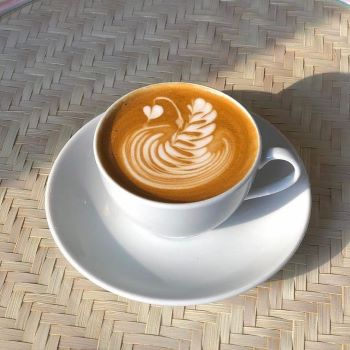

Kedai In_spirasi adalah kedai makanan yang dikelola oleh teman-teman disabilitas di bawah naungan RUMSIDISMA (Rumah Sahabat Disabilitas Mandiri). Kedai ini menjadi ruang inklusif untuk mengembangkan potensi dan kemandirian dalam bidang kewirausahaan. Meski menghadapi berbagai tantangan, dengan semangat pantang menyerah dan kolaborasi anak muda, Kedai In_spirasi berhasil menghadirkan cita rasa tradisional dengan sentuhan kekinian yang relevan di masyarakat.
Bergabung dan Memberikan Dampak

Kami juga sangat bersyukur atas kehadiran BSI Maslahat yang menjadi bagian penting dari perjalanan ini. Dukungan yang diberikan bukan hanya memperkuat usaha kami secara nyata, tetapi juga menumbuhkan kepercayaan diri seluruh tim untuk melangkah lebih jauh.
Dengan penuh rasa hormat, kami ingin menyampaikan apresiasi yang mendalam kepada ✨ BSI Maslahat ✨ yang telah menjadi mitra setia kami dalam perjalanan luar biasa ini. Dukungan yang diberikan telah memungkinkan kami untuk mewujudkan visi besar Kedai In_spirasi: memberdayakan penyandang disabilitas melalui kuliner dan membuka lebih banyak peluang bagi mereka untuk berkarya. Terima kasih atas komitmen dan kerja sama yang luar biasa dalam menciptakan perubahan positif dan inklusif di masyarakat. Kami bersemangat untuk terus melangkah bersama, memperluas dampak, dan membawa inspirasi bagi lebih banyak orang.
Kegiatan Bersama BSI Maslahat

Ayo Berkontribusi Bersama Kami!
Kini, kami membuka kesempatan bagi Anda untuk turut ambil bagian dalam perjalanan ini. Setiap dukungan Anda akan menjadi energi baru untuk memperluas dampak positif yang telah kami mulai bersama.
Donasi Sekarang